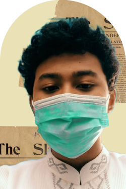

About Me
Nama saya Muhammad Malik Firdaus atau biasa dipanggil Malik, lahir di Pekanbaru pada kamis 5 Agustus 2004. Saya berasal dari SMA Smart Ekselensia. Saya memiliki hobi membaca dan berolahraga, sering juga main game. Role model saya adalah nabi Muhammad, banyak hal baik dari beliau yang belum dapat saya aplikasikan. Selain nabi Muhammad, ada Diogenes karena laku hidupnya menjadi gembel dan Fariduddin Attar karena karyanya yang hebat yaitu Musyawarah burung. Alasan saya memilih jurusan ini adalah saya memiliki menyukai pergi perpustakaan ketika masih sekolah.